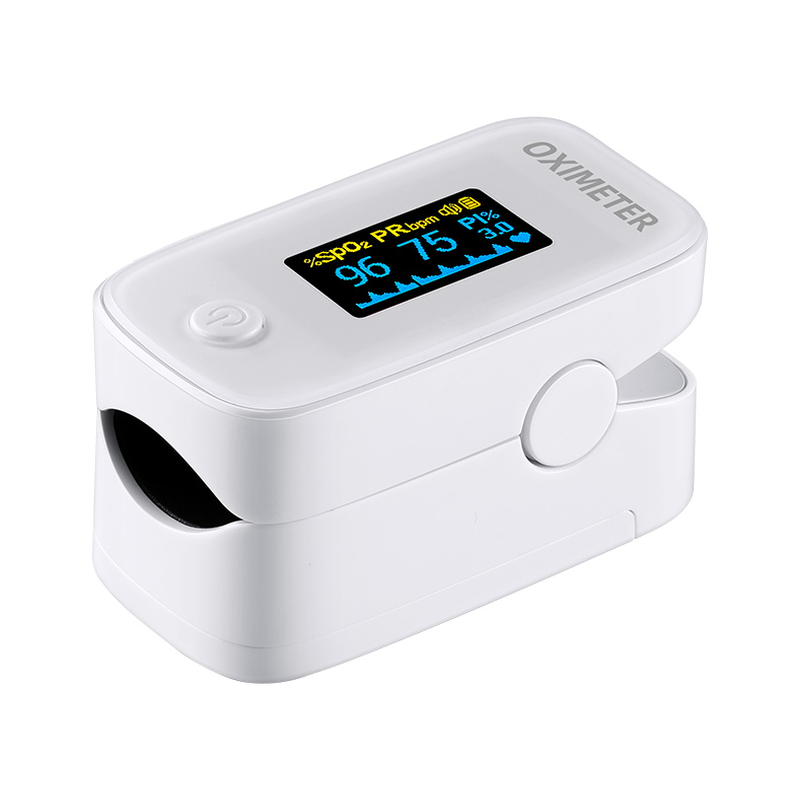

User Manual
Request the English manual for the model and configuration you are evaluating.
Request manual →The YM201 combines the Prime fingertip format with a 0.96-inch OLED or TFT display and an included buzzer. Review the display configuration for your target market.
Manufacturer: YimiLife · Quality management

Compare the listed parameters with your project requirements. Confirm the selected configuration and applicable documentation before planning samples.
| Specification | Details |
|---|---|
| SpO₂ | Range: 35–100% Accuracy: ±2% (70–100%) Accuracy unspecified at 35–69% |
| Pulse rate | Range: 30–250 bpm Accuracy: ±3 bpm |
| Intended users | Adult |
| Display | 0.96-inch OLED or TFT |
| Power supply | 2 × AAA 1.5 V alkaline batteries |
| Dimensions & weight | Approx. 57 × 30 × 31 mm (L × W × H) Approx. 35 g (excluding batteries) |
| Bluetooth | Not included |
| Buzzer | Included |
Start with the display option. YM201 offers OLED or TFT in the same Prime product format; Bluetooth is not included in the current configuration.
Request files for YM201, your selected configuration and target market. Document availability and regulatory scope must be confirmed for your project.
Request the English manual for the model and configuration you are evaluating.
Request manual →Ask which CE, FDA or NMPA documents apply to your model and target market.
Request documents →Review the product range and discuss other models for your sourcing project.
View catalog options →FDA 510(k) reference K191430 lists YM201. Review the original record and confirm the configuration and intended-use scope for your project. View the model reference →
YM201 offers a 0.96-inch OLED or TFT display and an included buzzer. YM101 has a 1.5-inch red LED display and no buzzer in the current configuration.
Bluetooth is not included in the current YM201 configuration. If connectivity is part of your brief, discuss the requirement with our team before selecting a model.
Confirm the OLED or TFT display, target market, documentation needs and branding requirements. Sample arrangements and commercial terms are reviewed for the project.
Share your target market, preferred configuration and expected quantity.